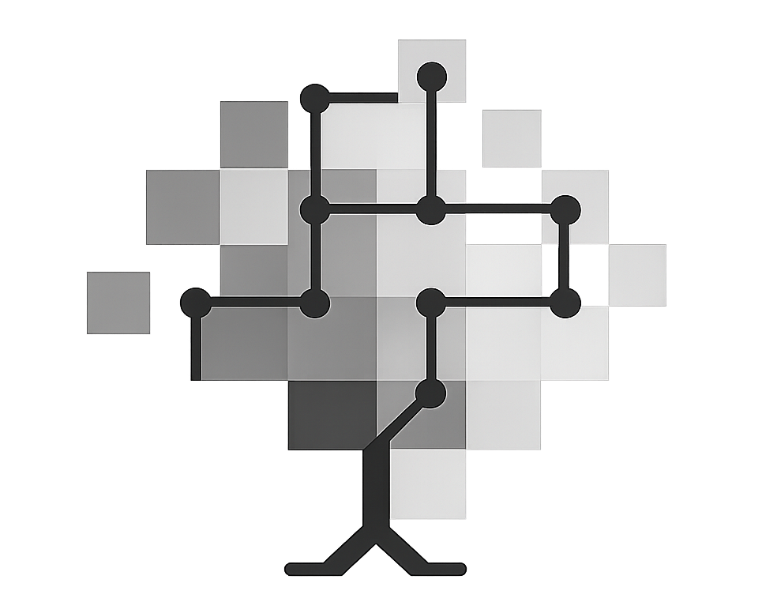
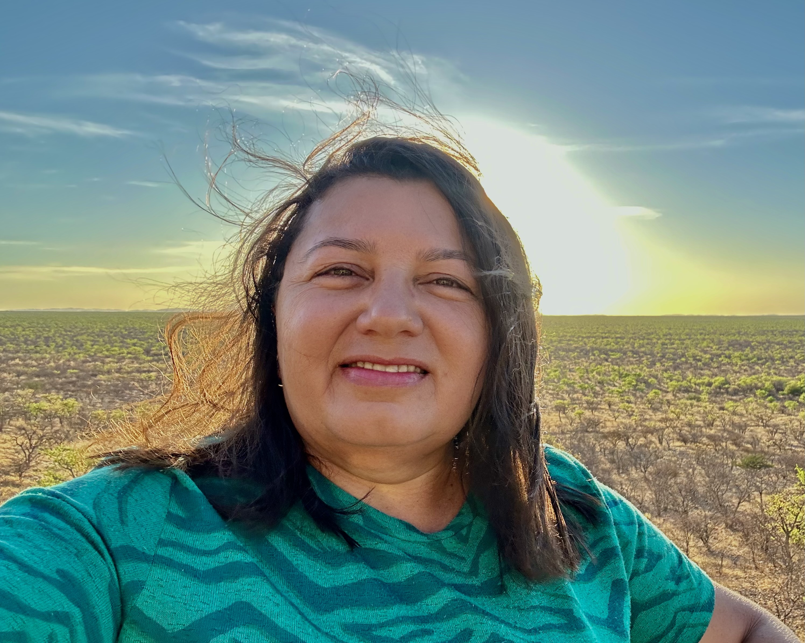

C

Camilla Farrapo
Universidade Federal de Lavras
People and institutional links across Rede C2
People and institutional links supporting Caatinga and Cerrado monitoring across Rede C2.
Rede C2 brings together researchers, students and institutions working on long-term vegetation monitoring, floristics, functional traits, restoration, biodiversity synthesis and conservation of seasonally dry ecosystems.
The team list presents contact links, academic profiles and institutional affiliations associated with the network.

Universidade Federal de Lavras

Universidade Federal de Minas Gerais

Universidade Estadual Paulista (Rio Claro)

Jardim Botânico do Rio de Janeiro
Universidade Federal de Lavras

Jardim Botânico do Rio de Janeiro
Institut de Recherche pour le Développement
Universidade Federal de Ceará
Universidade Federal de Pernambuco

Universidade Federal do Vale do São Francisco

Universita di Torino

EMBRAPA
Universidade Estadual de Mato Grosso (Cáceres)

Universidade Federal de Pernambuco
Royal Botanic Gardens, Kew
Universidade de Estadual Montes Claros
Universidade Estadual Paulista (Rio Claro)
Universidade de Estadual Montes Claros
Universidade Federal do Vale do São Francisco
Serviço Florestal Brasileiro
Universidade Federal de Pernambuco
Universidade Federal de Lavras
University of Exeter